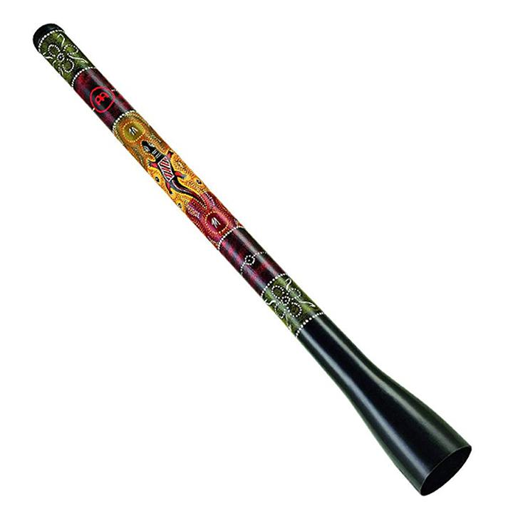

Chapter 1 Learning Goals and Success
The learning goals for this activity are for students to:
- Develop an awareness of the science and history of the didgeridoo and the paixiao
- Practice hands-on construction methods to create custom, playable PVC musical instruments
- Develop an awareness of long-term trends in climate data
- Create a collaborative musical piece inspired by climate data
- Perform the custom musical piece using the didgeridoo and/or the paixiao
Success will be determined by:
- Creation of playable PVC musical instruments
- Creation and performance of a musical piece inspired directly by trends in global climate data

Figure 1.1: Didgeridoo.